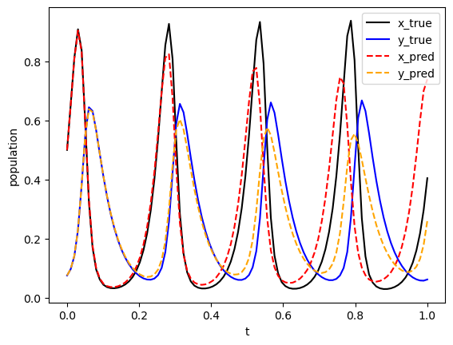

import deepxde as dde
import matplotlib.pyplot as plt
import numpy as np
from scipy import integrate
from deepxde.backend import tf
Using backend: tensorflow.compat.v1
2023-03-09 13:07:22.863272: I tensorflow/core/platform/cpu_feature_guard.cc:193] This TensorFlow binary is optimized with oneAPI Deep Neural Network Library (oneDNN) to use the following CPU instructions in performance-critical operations: AVX2 AVX512F AVX512_VNNI AVX512_BF16 FMA
To enable them in other operations, rebuild TensorFlow with the appropriate compiler flags.
2023-03-09 13:07:22.929964: I tensorflow/core/util/port.cc:104] oneDNN custom operations are on. You may see slightly different numerical results due to floating-point round-off errors from different computation orders. To turn them off, set the environment variable `TF_ENABLE_ONEDNN_OPTS=0`.
2023-03-09 13:07:23.247917: W tensorflow/compiler/xla/stream_executor/platform/default/dso_loader.cc:64] Could not load dynamic library 'libnvinfer.so.7'; dlerror: libnvinfer.so.7: cannot open shared object file: No such file or directory; LD_LIBRARY_PATH: :/home/alonsolml/mambaforge/envs/nc-book/lib/:/home/alonsolml/mambaforge/envs/nc-book/lib/
2023-03-09 13:07:23.249714: W tensorflow/compiler/xla/stream_executor/platform/default/dso_loader.cc:64] Could not load dynamic library 'libnvinfer_plugin.so.7'; dlerror: libnvinfer_plugin.so.7: cannot open shared object file: No such file or directory; LD_LIBRARY_PATH: :/home/alonsolml/mambaforge/envs/nc-book/lib/:/home/alonsolml/mambaforge/envs/nc-book/lib/
2023-03-09 13:07:23.249720: W tensorflow/compiler/tf2tensorrt/utils/py_utils.cc:38] TF-TRT Warning: Cannot dlopen some TensorRT libraries. If you would like to use Nvidia GPU with TensorRT, please make sure the missing libraries mentioned above are installed properly.
WARNING:tensorflow:From /home/alonsolml/mambaforge/envs/nc-book/lib/python3.10/site-packages/tensorflow/python/compat/v2_compat.py:107: disable_resource_variables (from tensorflow.python.ops.variable_scope) is deprecated and will be removed in a future version.
Instructions for updating:
non-resource variables are not supported in the long term
Enable just-in-time compilation with XLA.
2023-03-09 13:07:23.680478: I tensorflow/compiler/xla/stream_executor/cuda/cuda_gpu_executor.cc:967] could not open file to read NUMA node: /sys/bus/pci/devices/0000:01:00.0/numa_node
Your kernel may have been built without NUMA support.
2023-03-09 13:07:23.692593: I tensorflow/compiler/xla/stream_executor/cuda/cuda_gpu_executor.cc:967] could not open file to read NUMA node: /sys/bus/pci/devices/0000:01:00.0/numa_node
Your kernel may have been built without NUMA support.
2023-03-09 13:07:23.692623: I tensorflow/compiler/xla/stream_executor/cuda/cuda_gpu_executor.cc:967] could not open file to read NUMA node: /sys/bus/pci/devices/0000:01:00.0/numa_node
Your kernel may have been built without NUMA support.
WARNING:tensorflow:From /home/alonsolml/mambaforge/envs/nc-book/lib/python3.10/site-packages/deepxde/nn/initializers.py:118: The name tf.keras.initializers.he_normal is deprecated. Please use tf.compat.v1.keras.initializers.he_normal instead.
ub = 200
rb = 20
def func(t, r):
x, y = r
dx_t = 1 / ub * rb * (2.0 * ub * x - 0.04 * ub * x * ub * y)
dy_t = 1 / ub * rb * (0.02 * ub * x * ub * y - 1.06 * ub * y)
return dx_t, dy_t
def gen_truedata():
t = np.linspace(0, 1, 100)
sol = integrate.solve_ivp(func, (0, 10), (100 / ub, 15 / ub), t_eval=t)
x_true, y_true = sol.y
x_true = x_true.reshape(100, 1)
y_true = y_true.reshape(100, 1)
return x_true, y_true
def ode_system(x, y):
r = y[:, 0:1]
p = y[:, 1:2]
dr_t = dde.grad.jacobian(y, x, i=0)
dp_t = dde.grad.jacobian(y, x, i=1)
return [
dr_t - 1 / ub * rb * (2.0 * ub * r - 0.04 * ub * r * ub * p),
dp_t - 1 / ub * rb * (0.02 * r * ub * p * ub - 1.06 * p * ub),
]
geom = dde.geometry.TimeDomain(0.0, 1.0)
data = dde.data.PDE(geom, ode_system, [], 3000, 2, num_test=3000)
layer_size = [1] + [64] * 6 + [2]
activation = "tanh"
initializer = "Glorot normal"
net = dde.nn.FNN(layer_size, activation, initializer)
# Backend tensorflow.compat.v1 or tensorflow
def input_transform(t):
return tf.concat(
(
t,
tf.sin(t),
tf.sin(2 * t),
tf.sin(3 * t),
tf.sin(4 * t),
tf.sin(5 * t),
tf.sin(6 * t),
),
axis=1,
)
# hard constraints: x(0) = 100, y(0) = 15
# Backend tensorflow.compat.v1 or tensorflow
def output_transform(t, y):
y1 = y[:, 0:1]
y2 = y[:, 1:2]
return tf.concat([y1 * tf.tanh(t) + 100 / ub, y2 * tf.tanh(t) + 15 / ub], axis=1)
net.apply_feature_transform(input_transform)
net.apply_output_transform(output_transform)
model = dde.Model(data, net)
model.compile("adam", lr=0.001)
losshistory, train_state = model.train(iterations=50000)
model.compile("L-BFGS")
losshistory, train_state = model.train()
dde.saveplot(losshistory, train_state, issave=True, isplot=True)
Compiling model...
Building feed-forward neural network...
'build' took 0.038525 s
/home/alonsolml/mambaforge/envs/nc-book/lib/python3.10/site-packages/deepxde/nn/tensorflow_compat_v1/fnn.py:103: UserWarning: `tf.layers.dense` is deprecated and will be removed in a future version. Please use `tf.keras.layers.Dense` instead.
return tf.layers.dense(
2023-03-09 13:07:24.391435: I tensorflow/core/platform/cpu_feature_guard.cc:193] This TensorFlow binary is optimized with oneAPI Deep Neural Network Library (oneDNN) to use the following CPU instructions in performance-critical operations: AVX2 AVX512F AVX512_VNNI AVX512_BF16 FMA
To enable them in other operations, rebuild TensorFlow with the appropriate compiler flags.
2023-03-09 13:07:24.394854: I tensorflow/compiler/xla/stream_executor/cuda/cuda_gpu_executor.cc:967] could not open file to read NUMA node: /sys/bus/pci/devices/0000:01:00.0/numa_node
Your kernel may have been built without NUMA support.
2023-03-09 13:07:24.394900: I tensorflow/compiler/xla/stream_executor/cuda/cuda_gpu_executor.cc:967] could not open file to read NUMA node: /sys/bus/pci/devices/0000:01:00.0/numa_node
Your kernel may have been built without NUMA support.
2023-03-09 13:07:24.394926: I tensorflow/compiler/xla/stream_executor/cuda/cuda_gpu_executor.cc:967] could not open file to read NUMA node: /sys/bus/pci/devices/0000:01:00.0/numa_node
Your kernel may have been built without NUMA support.
2023-03-09 13:07:24.751409: I tensorflow/compiler/xla/stream_executor/cuda/cuda_gpu_executor.cc:967] could not open file to read NUMA node: /sys/bus/pci/devices/0000:01:00.0/numa_node
Your kernel may have been built without NUMA support.
2023-03-09 13:07:24.751475: I tensorflow/compiler/xla/stream_executor/cuda/cuda_gpu_executor.cc:967] could not open file to read NUMA node: /sys/bus/pci/devices/0000:01:00.0/numa_node
Your kernel may have been built without NUMA support.
2023-03-09 13:07:24.751482: I tensorflow/core/common_runtime/gpu/gpu_device.cc:1700] Could not identify NUMA node of platform GPU id 0, defaulting to 0. Your kernel may not have been built with NUMA support.
2023-03-09 13:07:24.751503: I tensorflow/compiler/xla/stream_executor/cuda/cuda_gpu_executor.cc:967] could not open file to read NUMA node: /sys/bus/pci/devices/0000:01:00.0/numa_node
Your kernel may have been built without NUMA support.
2023-03-09 13:07:24.751511: W tensorflow/core/common_runtime/gpu/gpu_bfc_allocator.cc:42] Overriding orig_value setting because the TF_FORCE_GPU_ALLOW_GROWTH environment variable is set. Original config value was 0.
2023-03-09 13:07:24.751529: I tensorflow/core/common_runtime/gpu/gpu_device.cc:1613] Created device /job:localhost/replica:0/task:0/device:GPU:0 with 7369 MB memory: -> device: 0, name: NVIDIA GeForce RTX 3080, pci bus id: 0000:01:00.0, compute capability: 8.6
'compile' took 0.841025 s
Initializing variables...
Training model...
2023-03-09 13:07:25.201406: I tensorflow/compiler/mlir/mlir_graph_optimization_pass.cc:357] MLIR V1 optimization pass is not enabled
2023-03-09 13:07:25.281366: I tensorflow/compiler/xla/service/service.cc:173] XLA service 0x7f4c5400dc70 initialized for platform CUDA (this does not guarantee that XLA will be used). Devices:
2023-03-09 13:07:25.281391: I tensorflow/compiler/xla/service/service.cc:181] StreamExecutor device (0): NVIDIA GeForce RTX 3080, Compute Capability 8.6
2023-03-09 13:07:25.288727: I tensorflow/compiler/mlir/tensorflow/utils/dump_mlir_util.cc:268] disabling MLIR crash reproducer, set env var `MLIR_CRASH_REPRODUCER_DIRECTORY` to enable.
2023-03-09 13:07:25.904126: I tensorflow/tsl/platform/default/subprocess.cc:304] Start cannot spawn child process: Permission denied
2023-03-09 13:07:26.314204: I tensorflow/compiler/xla/stream_executor/gpu/asm_compiler.cc:325] ptxas warning : Registers are spilled to local memory in function 'fusion_2', 424 bytes spill stores, 524 bytes spill loads
2023-03-09 13:07:26.317175: I tensorflow/compiler/jit/xla_compilation_cache.cc:477] Compiled cluster using XLA! This line is logged at most once for the lifetime of the process.
2023-03-09 13:07:26.869608: I tensorflow/compiler/xla/stream_executor/cuda/cuda_blas.cc:630] TensorFloat-32 will be used for the matrix multiplication. This will only be logged once.
Step Train loss Test loss Test metric
0 [7.81e+02, 8.07e+00] [7.82e+02, 8.08e+00] []
2023-03-09 13:07:27.949748: I tensorflow/compiler/xla/stream_executor/gpu/asm_compiler.cc:325] ptxas warning : Registers are spilled to local memory in function 'fusion_2', 424 bytes spill stores, 524 bytes spill loads
1000 [1.51e+01, 1.06e+00] [1.50e+01, 1.06e+00] []
2000 [5.34e+00, 1.69e-01] [5.21e+00, 1.68e-01] []
3000 [3.40e+00, 4.33e-01] [3.28e+00, 4.29e-01] []
4000 [2.41e+00, 5.61e-01] [2.30e+00, 5.53e-01] []
5000 [1.79e+00, 6.12e-01] [1.70e+00, 6.00e-01] []
6000 [1.34e+00, 6.14e-01] [1.26e+00, 5.98e-01] []
7000 [9.87e-01, 5.52e-01] [9.26e-01, 5.36e-01] []
8000 [6.72e-01, 4.38e-01] [6.32e-01, 4.24e-01] []
9000 [4.40e-01, 3.20e-01] [4.17e-01, 3.09e-01] []
10000 [2.59e-01, 2.59e-01] [2.48e-01, 2.51e-01] []
11000 [1.85e-01, 2.07e-01] [1.81e-01, 2.00e-01] []
12000 [1.11e-01, 1.70e-01] [1.09e-01, 1.66e-01] []
13000 [7.94e-02, 1.53e-01] [7.89e-02, 1.51e-01] []
14000 [6.27e-02, 1.05e-01] [6.25e-02, 1.03e-01] []
15000 [5.82e-02, 8.97e-02] [5.82e-02, 8.87e-02] []
---------------------------------------------------------------------------
KeyboardInterrupt Traceback (most recent call last)
Cell In [4], line 3
1 model = dde.Model(data, net)
2 model.compile("adam", lr=0.001)
----> 3 losshistory, train_state = model.train(iterations=50000)
4 model.compile("L-BFGS")
5 losshistory, train_state = model.train()
File ~/mambaforge/envs/nc-book/lib/python3.10/site-packages/deepxde/utils/internal.py:22, in timing.<locals>.wrapper(*args, **kwargs)
19 @wraps(f)
20 def wrapper(*args, **kwargs):
21 ts = timeit.default_timer()
---> 22 result = f(*args, **kwargs)
23 te = timeit.default_timer()
24 print("%r took %f s\n" % (f.__name__, te - ts))
File ~/mambaforge/envs/nc-book/lib/python3.10/site-packages/deepxde/model.py:594, in Model.train(self, iterations, batch_size, display_every, disregard_previous_best, callbacks, model_restore_path, model_save_path, epochs)
592 if iterations is None:
593 raise ValueError("No iterations for {}.".format(self.opt_name))
--> 594 self._train_sgd(iterations, display_every)
595 self.callbacks.on_train_end()
597 print("")
File ~/mambaforge/envs/nc-book/lib/python3.10/site-packages/deepxde/model.py:611, in Model._train_sgd(self, iterations, display_every)
606 self.callbacks.on_batch_begin()
608 self.train_state.set_data_train(
609 *self.data.train_next_batch(self.batch_size)
610 )
--> 611 self._train_step(
612 self.train_state.X_train,
613 self.train_state.y_train,
614 self.train_state.train_aux_vars,
615 )
617 self.train_state.epoch += 1
618 self.train_state.step += 1
File ~/mambaforge/envs/nc-book/lib/python3.10/site-packages/deepxde/model.py:506, in Model._train_step(self, inputs, targets, auxiliary_vars)
504 if backend_name == "tensorflow.compat.v1":
505 feed_dict = self.net.feed_dict(True, inputs, targets, auxiliary_vars)
--> 506 self.sess.run(self.train_step, feed_dict=feed_dict)
507 elif backend_name == "tensorflow":
508 self.train_step(inputs, targets, auxiliary_vars)
File ~/mambaforge/envs/nc-book/lib/python3.10/site-packages/tensorflow/python/client/session.py:968, in BaseSession.run(self, fetches, feed_dict, options, run_metadata)
965 run_metadata_ptr = tf_session.TF_NewBuffer() if run_metadata else None
967 try:
--> 968 result = self._run(None, fetches, feed_dict, options_ptr,
969 run_metadata_ptr)
970 if run_metadata:
971 proto_data = tf_session.TF_GetBuffer(run_metadata_ptr)
File ~/mambaforge/envs/nc-book/lib/python3.10/site-packages/tensorflow/python/client/session.py:1191, in BaseSession._run(self, handle, fetches, feed_dict, options, run_metadata)
1188 # We only want to really perform the run if fetches or targets are provided,
1189 # or if the call is a partial run that specifies feeds.
1190 if final_fetches or final_targets or (handle and feed_dict_tensor):
-> 1191 results = self._do_run(handle, final_targets, final_fetches,
1192 feed_dict_tensor, options, run_metadata)
1193 else:
1194 results = []
File ~/mambaforge/envs/nc-book/lib/python3.10/site-packages/tensorflow/python/client/session.py:1371, in BaseSession._do_run(self, handle, target_list, fetch_list, feed_dict, options, run_metadata)
1368 return self._call_tf_sessionprun(handle, feed_dict, fetch_list)
1370 if handle is None:
-> 1371 return self._do_call(_run_fn, feeds, fetches, targets, options,
1372 run_metadata)
1373 else:
1374 return self._do_call(_prun_fn, handle, feeds, fetches)
File ~/mambaforge/envs/nc-book/lib/python3.10/site-packages/tensorflow/python/client/session.py:1378, in BaseSession._do_call(self, fn, *args)
1376 def _do_call(self, fn, *args):
1377 try:
-> 1378 return fn(*args)
1379 except errors.OpError as e:
1380 message = compat.as_text(e.message)
File ~/mambaforge/envs/nc-book/lib/python3.10/site-packages/tensorflow/python/client/session.py:1361, in BaseSession._do_run.<locals>._run_fn(feed_dict, fetch_list, target_list, options, run_metadata)
1358 def _run_fn(feed_dict, fetch_list, target_list, options, run_metadata):
1359 # Ensure any changes to the graph are reflected in the runtime.
1360 self._extend_graph()
-> 1361 return self._call_tf_sessionrun(options, feed_dict, fetch_list,
1362 target_list, run_metadata)
File ~/mambaforge/envs/nc-book/lib/python3.10/site-packages/tensorflow/python/client/session.py:1454, in BaseSession._call_tf_sessionrun(self, options, feed_dict, fetch_list, target_list, run_metadata)
1452 def _call_tf_sessionrun(self, options, feed_dict, fetch_list, target_list,
1453 run_metadata):
-> 1454 return tf_session.TF_SessionRun_wrapper(self._session, options, feed_dict,
1455 fetch_list, target_list,
1456 run_metadata)
KeyboardInterrupt:
plt.xlabel("t")
plt.ylabel("population")
t = np.linspace(0, 1, 100)
x_true, y_true = gen_truedata()
plt.plot(t, x_true, color="black", label="x_true")
plt.plot(t, y_true, color="blue", label="y_true")
t = t.reshape(100, 1)
sol_pred = model.predict(t)
x_pred = sol_pred[:, 0:1]
y_pred = sol_pred[:, 1:2]
plt.plot(t, x_pred, color="red", linestyle="dashed", label="x_pred")
plt.plot(t, y_pred, color="orange", linestyle="dashed", label="y_pred")
plt.legend()
plt.show()
